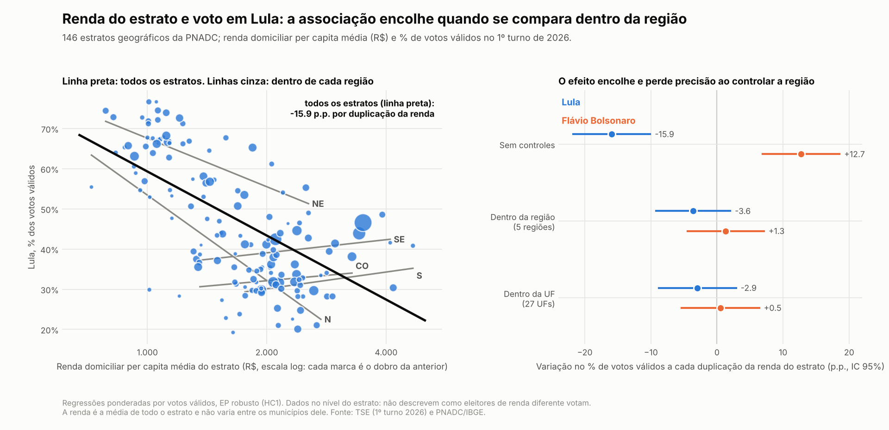
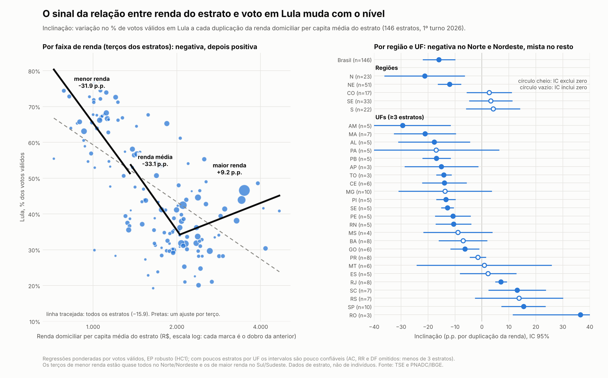
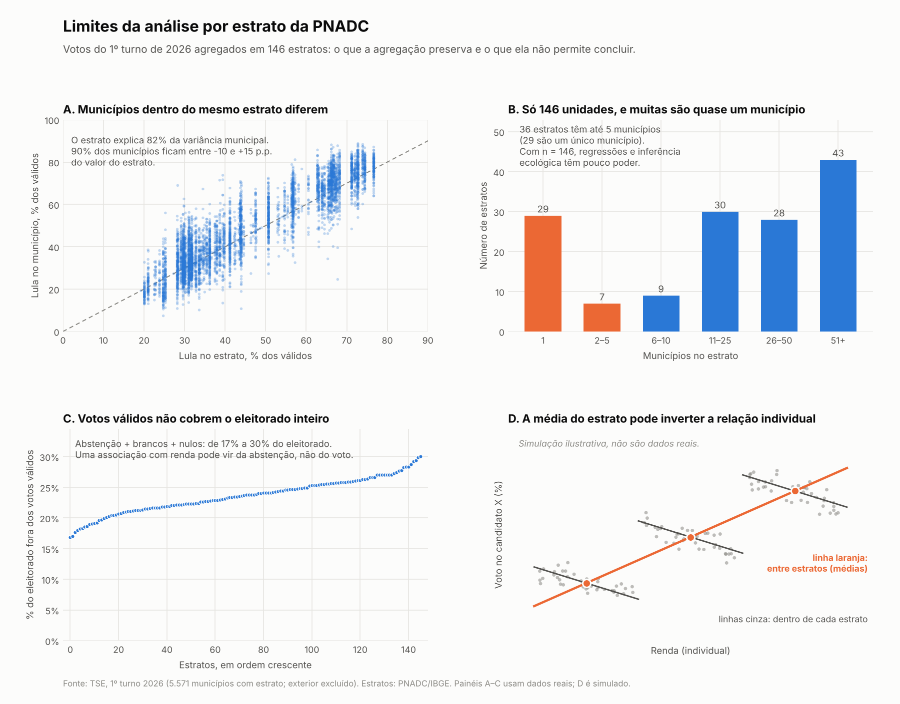
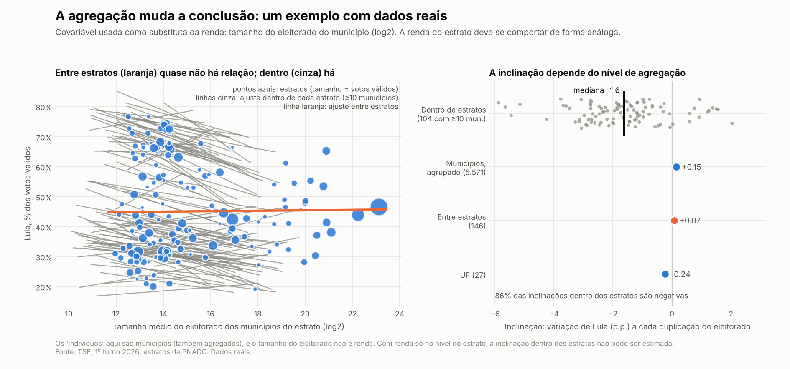

Renda e voto no 1º turno de 2026: o que dá (e o que não dá) para dizer com dados agregados
Depois do 1º turno, voltou o argumento de que “renda se correlaciona inversamente com voto no Lula”. A gente tem os resultados por município e a PNADC, então dá para olhar. A pergunta central é: o que esses dados realmente permitem concluir?
Spoiler: a correlação existe, mas ela é entre áreas, e isso não diz o que acontece entre pessoas.
Resultados observáveis
- Votos: resultado do 1º turno de 2026 para presidente (4 de outubro) por município, a partir dos arquivos JSON de divulgação do TSE. Foram 5.571 municípios com estrato; os votos do exterior ficaram de fora. Boa Esperança do Norte (MT), município novo desmembrado de Sorriso que não aparece na tabela de estratos, foi atribuído ao estrato de Sorriso.
- Estratos: os 146 estratos geográficos da PNADC. Cada município pertence a um estrato, e um estrato pode ter de 1 a 186 municípios.
- Renda: renda domiciliar per capita média de cada estrato, estimada com a PNADC 2025 (1ª visita).
Todas as porcentagens abaixo são sobre votos válidos. Abstenções, brancos e nulos ficam de fora, e eles somam de 17% a 30% do eleitorado dependendo do estrato.
O que aparece nos estratos
Se a gente regride o percentual de votos válidos de Lula na renda do estrato (em log, ponderando pelos votos válidos), a inclinação é de −15,9 pontos percentuais a cada duplicação da renda (IC de 95%: −21,8 a −10,1). Para Flávio Bolsonaro, o sinal é o oposto: +12,7. A correlação simples entre log da renda e voto em Lula é −0,67.
Ou seja: estratos mais ricos votaram menos em Lula. Se a história acabasse aqui, o argumento estaria confirmado.
Só que isso é, em boa parte, geografia
Os estratos mais pobres estão quase todos no Norte e no Nordeste, onde Lula é mais forte. Se a gente comparar estratos dentro da mesma região, a história muda bastante:
| Modelo | Lula (p.p. por duplicação da renda) | Flávio (p.p. por duplicação da renda) |
|---|---|---|
| Todos os estratos | −15,9 (−21,8 a −10,1) | +12,7 (+6,9 a +18,6) |
| Dentro da região (5 regiões) | −3,6 (−9,2 a +2,0) | +1,3 (−4,4 a +7,1) |
| Dentro da UF (27 UFs) | −2,9 (−8,8 a +2,9) | +0,5 (−5,4 a +6,4) |
O efeito encolhe para pouco mais de um quinto do original, e o intervalo passa a incluir o zero. No gráfico abaixo, a reta preta é a de todos os estratos e as cinzas são as de cada região: bem mais planas, e no Sudeste, Centro-Oeste e Sul até ligeiramente positivas.

E a relação não é uma reta
Quando a gente separa os estratos em terços de renda, o sinal muda:
| Terço de renda | Faixa (R$) | Inclinação (p.p. por duplicação) |
|---|---|---|
| Menor | 723 a 1.357 | −31,9 (EP 9,3) |
| Médio | 1.366 a 2.048 | −33,1 (EP 8,4) |
| Maior | 2.050 a 4.674 | +9,2 (EP 4,4) |
Um ajuste quadrático confirma o formato de U (termo quadrático de 15,9, EP 2,6, com mínimo perto de R$ 2.550), e ele continua aparecendo com efeito fixo de região (11,2, EP 1,9). Por região e UF, o sinal negativo domina no Norte (−21,3) e no Nordeste (−12,1). No Sudeste, Centro-Oeste e Sul as inclinações são positivas, mas os intervalos incluem o zero.

Uma ressalva importante: os terços de renda são muito regionais. O terço mais pobre tem 46 de 49 estratos no Norte ou Nordeste, e o mais rico tem 34 de 49 no Sul ou Sudeste. Então “faixa de renda” e “região” andam juntas, e com 146 estratos é difícil separar as duas coisas.
O que isso NÃO mostra
A pergunta que interessa a quem faz o argumento é sobre pessoas: eleitores mais pobres votam mais no Lula? Os dados acima respondem outra: áreas mais pobres votam mais no Lula? Passar de uma para outra é a falácia ecológica (Robinson, 1950).
Um exemplo numérico inventado, com a conta feita na seção de matemática logo abaixo, mostra que os dois enunciados podem ser verdadeiros ao mesmo tempo: o estrato mais rico vota menos em Lula, mas dentro de cada estrato quem tem renda maior vota mais. Esse padrão de sinais invertidos entre os níveis não é só um exemplo de livro: Gelman e coautores (2008) documentam, nos Estados Unidos, que os estados mais ricos votam mais nos Democratas, enquanto dentro de cada estado os eleitores mais ricos votam mais nos Republicanos.
Com isso, os mesmos dados são compatíveis com uma hipótese oposta à que circula: “dentro de cada lugar, eleitores de renda maior votam mais em Lula, e a relação entre áreas vem só da região”. Não estou dizendo que ela é verdadeira, só que estes dados não conseguem rejeitá-la.
Além disso, há limites específicos desta análise:

- Perda de informação. Os estratos explicam cerca de 82% da variância do voto municipal em Lula, mas 90% dos municípios ficam entre −10 e +15 pontos do valor do seu estrato.
- Poucas unidades. São só 146 estratos, 36 deles com até 5 municípios e 29 com um único município (as 27 capitais mais Santana, no Amapá, e o entorno de Teresina, no Maranhão). Isso dá pouco poder para qualquer regressão ou inferência ecológica.
- Votos válidos não são o eleitorado. A abstenção pode produzir uma associação com renda que não vem de quem vota em quem.
- Renda não varia dentro do estrato. Todo município de um estrato recebe a mesma renda, então não há como estimar uma inclinação dentro do estrato, que é justamente onde a falácia ecológica aparece.
Quantificando a perda de informação
Esta seção segue o capítulo de Steel, Beh e Chambers (2004), que mede quanta informação sobre relações individuais se perde quando só observamos agregados. Uso o caso mais simples, que já mostra o essencial.
O problema 2×2 em cada unidade
Em cada unidade \(i\) (município ou estrato), classifique os eleitores por \(X\) (1 = renda alta, 0 = renda baixa) e por \(Y\) (1 = votou em Lula, 0 = não). Com microdados, veríamos esta tabela:
| \(Y=1\) | \(Y=0\) | Total | |
|---|---|---|---|
| \(X=1\) | \(n_{11i}\) | \(n_{12i}\) | \(n_{1\bullet i}\) |
| \(X=0\) | \(n_{21i}\) | \(n_{22i}\) | \(n_{2\bullet i}\) |
| Total | \(n_{\bullet 1i}\) | \(n_{\bullet 2i}\) | \(n_i\) |
Com dados agregados, só enxergamos as margens: quantos eleitores há em cada grupo de renda (\(n_{1\bullet i}\) e \(n_{2\bullet i}\)) e quantos votos Lula teve (\(n_{\bullet 1i}\)). As células \(n_{11i}\) e \(n_{21i}\) ficam escondidas. O que queremos conhecer, em cada unidade, é a probabilidade de votar em Lula dentro de cada grupo de renda,
\[ \pi_{1i} = P(Y=1 \mid X=1), \qquad \pi_{2i} = P(Y=1 \mid X=0), \]
e, para o debate, a diferença \(\pi_{1i} - \pi_{2i}\). Condicionando nas margens de linha, \(n_{11i} \sim \text{Bin}(n_{1\bullet i}, \pi_{1i})\) e \(n_{21i} \sim \text{Bin}(n_{2\bullet i}, \pi_{2i})\).
Uma equação, duas incógnitas: a linha de tomografia
O total de votos em Lula é \(n_{\bullet 1i} = n_{11i} + n_{21i}\), com valor esperado \(n_{1\bullet i}\pi_{1i} + n_{2\bullet i}\pi_{2i}\). Igualando ao observado, obtemos a linha de tomografia (King, 1997; equação 2.12 do capítulo):
\[ \pi_{2i} = \frac{n_{\bullet 1i}}{n_{2\bullet i}} - \frac{n_{1\bullet i}}{n_{2\bullet i}}\,\pi_{1i}. \]
Cada unidade dá uma observação (\(n_{\bullet 1i}\)) para dois parâmetros. Com \(p\) unidades, são \(p\) observações para \(2p\) parâmetros: sem hipóteses adicionais, os dados só dizem que \((\pi_{1i}, \pi_{2i})\) está sobre uma reta. Os limites de Duncan e Davis (1953) são os pontos em que essa reta entra e sai do quadrado \([0,1]^2\), e são tudo o que cada unidade garante sozinha. Os autores mostram ainda que a verossimilhança é uma crista ao longo da reta: o mínimo está na independência (\(\pi_{1i} = \pi_{2i}\)) e o máximo, numa das pontas.
Quanto se perde: o princípio da informação perdida
Seja \(\phi\) o vetor de parâmetros, \(d^{(1)}\) os dados individuais e \(d^{(2)}\) os agregados. O escore e a informação observada dos agregados se relacionam com os individuais por (Breckling et al., 1994; equações 2.5 e 2.6 do capítulo)
\[ \text{sc}^{(2)}(\phi) = E\left[\text{sc}^{(1)}(\phi) \mid d^{(2)}\right], \qquad \text{info}^{(2)}(\phi) = E\left[\text{info}^{(1)}(\phi) \mid d^{(2)}\right] - \text{Var}\left[\text{sc}^{(1)}(\phi) \mid d^{(2)}\right]. \]
O último termo é a perda de informação: a variância do escore individual dado o que vemos nos agregados. Nas tabelas 2×2, em cada unidade essa matriz tem posto 1 e correlação −1 entre as duas componentes (é a linha de tomografia reaparecendo). O que se perde é a capacidade de separar \(\pi_{1i}\) de \(\pi_{2i}\), e por isso a diferença \(\pi_1 - \pi_2\) é a quantidade mais prejudicada.
Com homogeneidade o parâmetro é identificado, e a perda tem fórmula
A saída usual é supor \(\pi_{1i} = \pi_1\) e \(\pi_{2i} = \pi_2\) em todas as unidades (homogeneidade). É o que está por trás da regressão ecológica de Goodman (1953), \(T_i = \pi_2 + (\pi_1 - \pi_2)X_i + e_i\), em que \(T_i = n_{\bullet 1i}/n_i\) é a fração de votos em Lula e \(X_i = n_{1\bullet i}/n_i\) a fração de eleitores de renda alta. Agora são 2 parâmetros e \(p\) observações, e dá para estimar.
Com a aproximação normal para \(n_{\bullet 1i}\), as variâncias do estimador de \(\pi_1 - \pi_2\) com microdados e só com agregados são
\[ \text{Var}^{(1)} = \frac{\pi_1(1-\pi_1)}{N\bar X} + \frac{\pi_2(1-\pi_2)}{N(1-\bar X)}, \qquad \text{Var}^{(2)} \approx \frac{\bar X\,\pi_1(1-\pi_1) + (1-\bar X)\,\pi_2(1-\pi_2)}{N\,\text{Var}(X)}, \]
onde \(N\) é o total de eleitores, \(\bar X\) a fração média de renda alta e \(\text{Var}(X)\) a variância de \(X_i\) entre as unidades, ponderada pelo tamanho. Se as variâncias binomiais dos dois grupos são parecidas, a razão fica
\[ \frac{\text{Var}^{(2)}}{\text{Var}^{(1)}} \approx \frac{\bar X(1-\bar X)}{\text{Var}(X)} = \frac{1}{\rho}, \qquad \rho = \frac{\text{Var}(X_i)}{\bar X(1-\bar X)}. \]
O número \(\rho\) é a fração da variância de \(X\) que está entre unidades. Os agregados valem, grosso modo, \(\rho N\) microdados: quanto mais parecidas as unidades entre si na composição, menos informação sobrevive. Essas duas fórmulas são minhas (inverto a matriz de informação sob aproximação normal; o capítulo trabalha com a distribuição hipergeométrica não central) e concordam com uma simulação de Monte Carlo: num cenário com 50 unidades de 450 eleitores, o desvio-padrão do estimador agregado deu 0,0469 na simulação e 0,0466 pela fórmula.
O exemplo do capítulo. Os autores usam o Censo australiano de 1996, com 50 distritos de Brisbane e 22.323 pessoas. \(X=1\) é ter de 15 a 24 anos e \(Y=1\) é ter renda semanal abaixo de AU$ 160. Como os microdados do censo existem, dá para comparar os dois tipos de análise:
| Microdados | Só agregados (homogeneidade) | |
|---|---|---|
| \(\hat\pi_1\) | 0,505 (EP 0,008) | 0,518 (EP 0,035) |
| \(\hat\pi_2\) | 0,195 (EP 0,003) | 0,192 (EP 0,009) |
| EP de \(\hat\pi_1 - \hat\pi_2\) | 0,008 | 0,043 |
| Correlação entre \(\hat\pi_1\) e \(\hat\pi_2\) | 0 | −0,92 |
As estimativas pontuais ficam parecidas, mas os erros-padrão crescem de 3 a 5 vezes, e a variância da diferença é multiplicada por cerca de 28. Os autores traduzem isso em “tamanho de amostra equivalente”: os 50 distritos valem 803 pessoas, ou cerca de 16 pessoas por distrito, para estimar \(\pi_1 - \pi_2\). Eles também testam a homogeneidade: a estatística da razão de verossimilhanças é 502,7 com microdados e 339,3 só com agregados, contra um valor crítico de 122 (5%). Os dois rejeitam, e o agregado tem menos poder.
O que ajuda: juntar uma amostra de microdados
As informações somam: \(\text{info}^{(c)} = \text{info}^{(2)} + \text{info}^{(0)}\), em que \(\text{info}^{(0)}\) vem de uma amostra de \(n_0\) pessoas. No exemplo, a variância de \(\hat\pi_1 - \hat\pi_2\) cai assim:
| \(n_0\) | 0 | 100 | 500 | 1.000 | 5.000 |
|---|---|---|---|---|---|
| Variância | 0,001869 | 0,001656 | 0,001138 | 0,000818 | 0,000253 |
| Redução | – | 11% | 39% | 56% | 86% |
A amostra individual não precisa dizer a que unidade cada pessoa pertence. Ela reforça justamente os termos da diagonal da matriz de informação e reduz a correlação entre as estimativas. Esse é o argumento técnico para combinar resultados agregados com uma pesquisa de opinião ou de boca de urna.
Resultados clássicos que explicam o nosso caso
Estes não vêm do capítulo, são resultados básicos de regressão.
1. A inclinação mistura a relação entre e dentro das unidades. Se \(b_W\) e \(b_B\) são as inclinações dentro e entre grupos, e \(S^W_{xx}\) e \(S^B_{xx}\) as variações de \(x\) dentro e entre grupos, a inclinação da regressão com todos os dados é
\[ b = \frac{S^W_{xx}\, b_W + S^B_{xx}\, b_B}{S^W_{xx} + S^B_{xx}}. \]
Regredir médias de grupos entrega só \(b_B\). No nosso caso, a renda é a mesma para todos os municípios de um estrato, então \(S^W_{xx} = 0\) e \(b = b_B\): foi por isso que a regressão com 5.571 municípios deu exatamente a mesma inclinação que a de 146 estratos.
2. Efeito contextual e inversão de sinal. Suponha que o voto em Lula no estrato \(g\) seja \(\bar y_g = a_g + \beta\, p_g\), em que \(p_g\) é a fração de eleitores de renda alta, \(\beta\) o efeito individual de ter renda alta (igual em todos os estratos) e \(a_g\) o nível de base do estrato (por exemplo, o efeito da região). Então a inclinação entre estratos é
\[ b_B = \beta + \frac{\Delta a}{\Delta p}. \]
Um exemplo numérico, o mesmo de antes:
| Voto em Lula, menor renda | Voto em Lula, maior renda | Fração de maior renda | Voto em Lula no estrato | |
|---|---|---|---|---|
| Estrato A (pobre, Nordeste) | 70% | 80% | 20% | 72% |
| Estrato B (rico, Sul) | 35% | 45% | 70% | 42% |
Aqui \(\beta = +10\), \(\Delta a = 35 - 70 = -35\) e \(\Delta p = 0{,}7 - 0{,}2 = 0{,}5\), então \(b_B = 10 - 35/0{,}5 = -60\). Dentro de cada estrato, ter renda alta aumenta o voto em Lula em 10 pontos, e entre estratos a relação é fortemente negativa. A diferença entre os dois sinais é o efeito contextual \(\Delta a/\Delta p\), e as regressões por estrato não conseguem separá-lo de \(\beta\).
Há ainda um terceiro problema, que os dados agregados não revelam: a renda do estrato é uma média estimada com erro amostral, o que atenua a inclinação por um fator \(\lambda = \text{Var(renda verdadeira)} / [\text{Var(renda verdadeira)} + \text{Var(erro)}]\) (menor que 1). Com os erros-padrão do bootstrap da PNADC, estimei \(\hat\lambda = 0{,}95\) para o log2 da renda dos estratos: o erro amostral atenua a inclinação em menos de 5% (de \(-15{,}9\) para algo em torno de \(-16{,}7\) se corrigíssemos), então esse é o menor dos problemas.
Voltando à nossa análise
Nossa situação é pior do que o caso 2×2 do capítulo, por dois motivos. Primeiro, temos só a renda média do estrato, e não a fração \(n_{1\bullet i}\) de eleitores em cada faixa de renda, então nem dá para traçar as linhas de tomografia. Segundo, a regressão ecológica supõe homogeneidade, e as diferenças regionais mostradas acima (o efeito contextual \(\Delta a\)) são justamente uma violação dela.
O análogo de \(\rho\) para renda contínua é a fração da variância do log da renda individual que está entre grupos (a razão \(1/\rho\) vale também para um modelo linear com renda contínua). Estimei com os microdados da PNADC (renda domiciliar per capita positiva, em log, com os pesos amostrais e erro-padrão por bootstrap com os pesos de replicação), para três níveis de agregação:
| Agrupamento | Grupos | \(\hat\rho\) (EP) | \(1/\hat\rho\) |
|---|---|---|---|
| Estrato geográfico | 146 | 0,163 (0,006) | 6,1 |
| UF | 27 | 0,118 (0,004) | 8,5 |
| Região | 5 | 0,108 (0,004) | 9,3 |
# d: microdados da PNADC (peso v1032, estrato estrato.geo, renda domiciliar per capita rdpc)
d <- d[d$rdpc > 0, ]
d$ly <- log(d$rdpc)
mu <- weighted.mean(d$ly, d$v1032)
mug <- ave(d$ly * d$v1032, d$estrato.geo, FUN = sum) / ave(d$v1032, d$estrato.geo, FUN = sum)
rho <- sum(d$v1032 * (mug - mu)^2) / sum(d$v1032 * (d$ly - mu)^2)
rho # fração da variância do log da renda que está entre estratosSó 16% da variância do log da renda está entre estratos. Os outros 84% estão dentro deles, e é exatamente essa parte que a nossa análise não vê. Num cenário em que valesse a homogeneidade, \(1/\hat\rho \approx 6{,}1\) diz que a variância do estimador agregado do efeito individual da renda seria cerca de seis vezes a dos microdados (erro-padrão cerca de 2,5 vezes maior), e agregar por UF ou por região só piora (8,5 e 9,3). Com heterogeneidade, como a regional, o problema é pior, porque sem hipóteses adicionais os parâmetros deixam de ser identificados.
Um exemplo real de como a agregação muda a conclusão
Para ver o mecanismo com dados reais, usei como covariável auxiliar o tamanho do eleitorado do município (e não a renda, que só tenho no nível do estrato):

A inclinação entre estratos é praticamente zero (+0,07), a municipal agrupada também (+0,15). Mas dentro de 86% dos 104 estratos com pelo menos 10 municípios a inclinação é negativa, com mediana de −1,6 ponto por duplicação do eleitorado. Quem olhasse só o nível agregado concluiria “não há relação”, e estaria perdendo um padrão consistente por dentro. É um exemplo de mecanismo, não uma previsão do que a renda mostraria: os “indivíduos” aqui são municípios, que também são agregados.
O que seria preciso para responder à pergunta
Para estimar como eleitores de rendas diferentes votam, precisamos de informação individual ou de uma segunda margem em cada unidade:
- Pesquisas de opinião ou pesquisas de boca de urna, que perguntam renda e voto para as mesmas pessoas.
- Inferência ecológica propriamente dita, com a distribuição de renda em faixas para cada unidade (por exemplo, a fração de eleitores em cada faixa de renda por município ou zona eleitoral). Métodos como o de King (1997) e o modelo multinomial-Dirichlet de Rosen et al. (2001), implementado no pacote
eiPack, usam essa segunda margem para estimar a matriz de transição. Eles dependem de hipóteses fortes, e os resultados costumam ser sensíveis a elas. Combinar os agregados com uma amostra de microdados também ajuda muito (veja a tabela da seção de matemática). - Unidades menores, como zonas ou seções eleitorais, que têm mais variação nas margens do que municípios inteiros. O TSE disse que vai publicar os boletins de urna depois da totalização, então esses dados devem sair.
Conclusão
- Existe uma associação entre áreas: estratos de renda mais baixa deram mais votos válidos a Lula.
- Boa parte dela desaparece quando se compara dentro da região, e o sinal não é constante ao longo da renda.
- Isso não diz que eleitores mais pobres votam mais em Lula, nem o contrário. Para isso é preciso dado individual ou inferência ecológica com uma segunda margem.
Por isso, quando alguém disser que “os dados mostram que renda determina voto”, vale perguntar: dados de quem?
Referências
- Robinson, W. S. (1950). Ecological correlations and the behavior of individuals. American Sociological Review, 15(3), 351–357.
- Goodman, L. A. (1953). Ecological regressions and behavior of individuals. American Sociological Review, 18(6), 663–664.
- King, G. (1997). A Solution to the Ecological Inference Problem. Princeton University Press.
- Rosen, O., Jiang, W., King, G., Tanner, M. A. (2001). Bayesian and frequentist inference for ecological inference: the R×C case. Statistica Neerlandica, 55(2), 134–156.
- Gelman, A., Park, D., Shor, B., Bafumi, J., Cortina, J. (2008). Rich state, poor state, red state, blue state: What’s the matter with Connecticut? Quarterly Journal of Political Science, 2(4), 345–367.
- Duncan, O. D., Davis, B. (1953). An alternative to ecological correlation. American Sociological Review, 18(6), 665–666.
- Breckling, J. U., Chambers, R. L., Dorfman, A. H., Tam, S. M., Welsh, A. H. (1994). Maximum likelihood inference from sample survey data. International Statistical Review, 62, 349–363.
- Steel, D. G., Beh, E. J., Chambers, R. L. (2004). The information in aggregate data. Em: King, G., Rosen, O., Tanner, M. A. (orgs.), Ecological Inference: New Methodological Strategies, cap. 2, pp. 51–68. Cambridge University Press.